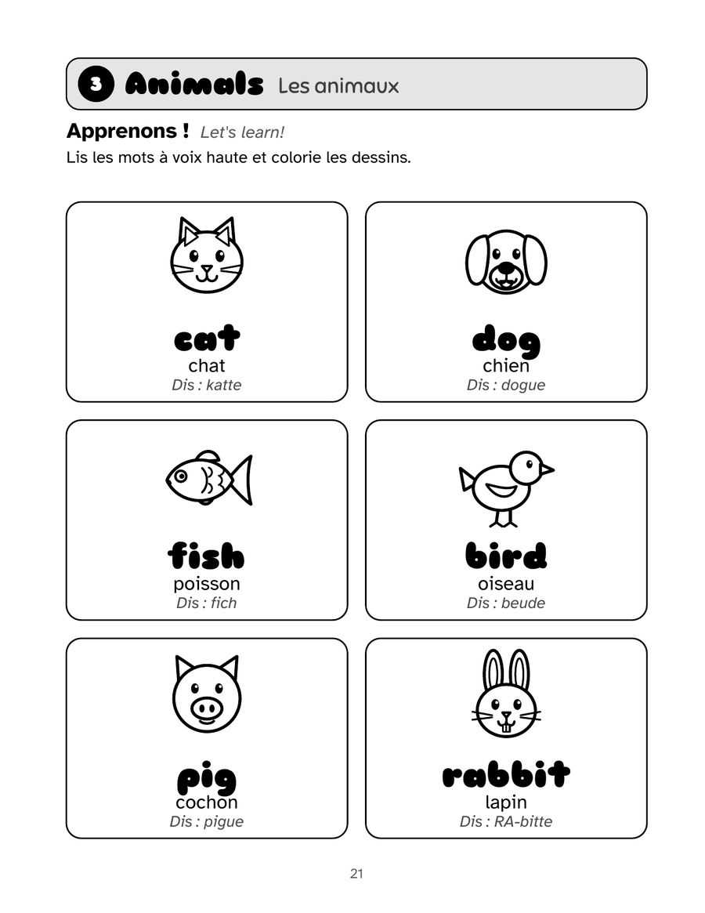
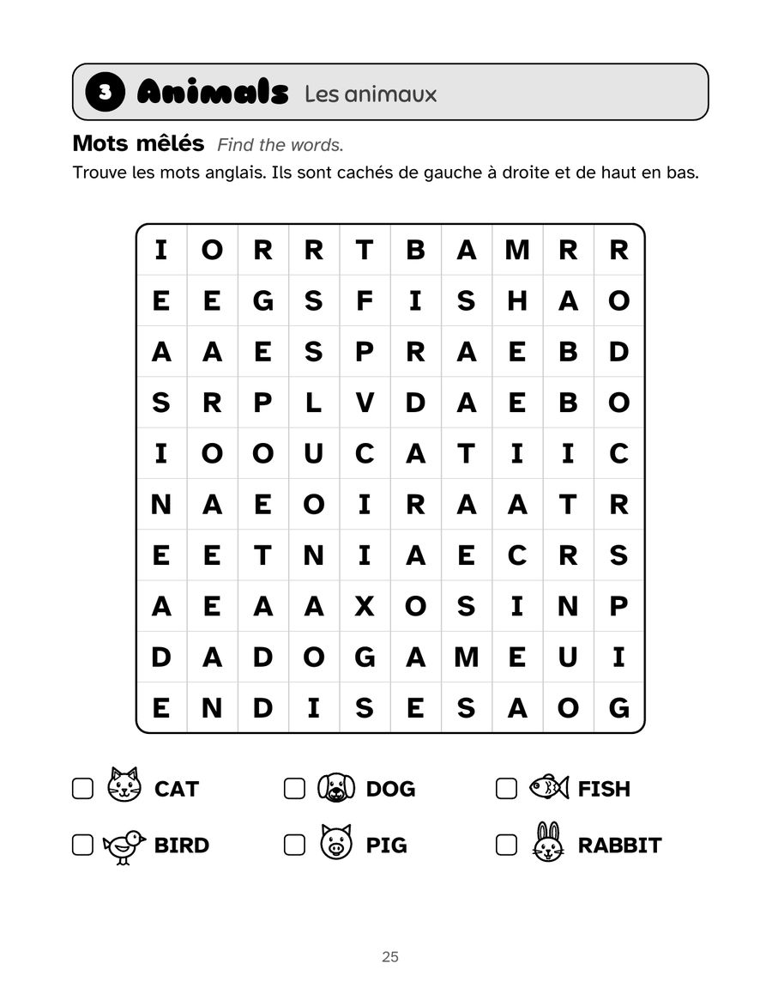
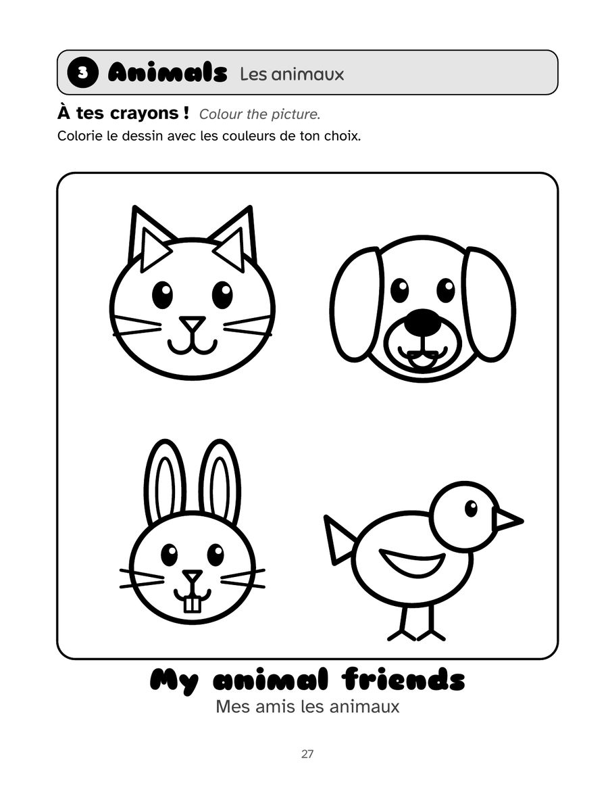

Français
Mon premier cahier d’activités en anglais
L’anglais pour les enfants de 5 à 9 ans
Un cahier bilingue français-anglais pour débuter l’anglais en s’amusant, de la grande section au CE2 : plus de 100 mots (anglais britannique) en 15 thèmes du quotidien, avec coloriages et petits jeux. Pas besoin de parler anglais pour aider.
PDF de 4 pages du livre, prêt à imprimer. Extraits gratuits pour un usage personnel et en classe.
118 pages · 21,6 × 27,9 cm · broché · Edições Gacrux
Dans ce cahier
- Chaque mot en anglais et en français, avec une aide à la prononciation
- Mots à repasser, puis à écrire sans modèle
- Relier, mots mêlés et lettres mélangées dans chaque thème
- 15 grands coloriages
- Une page de conseils pour les parents
- Solutions à la fin et un diplôme pour l’enfant
Découvrez l’intérieur
Touchez une page pour l’agrandir.





